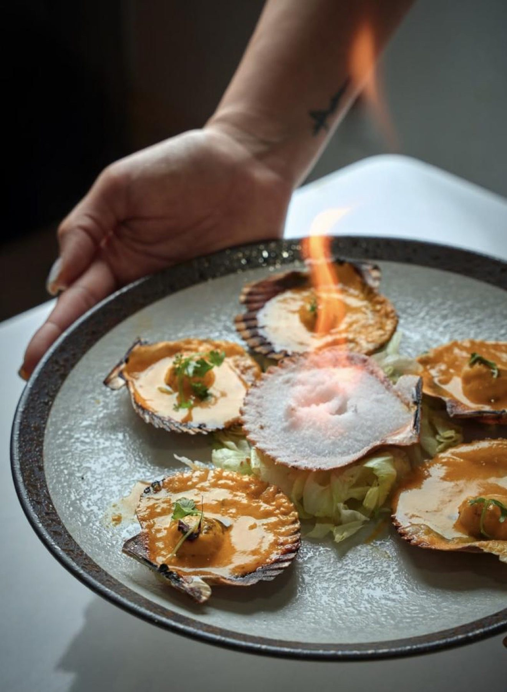
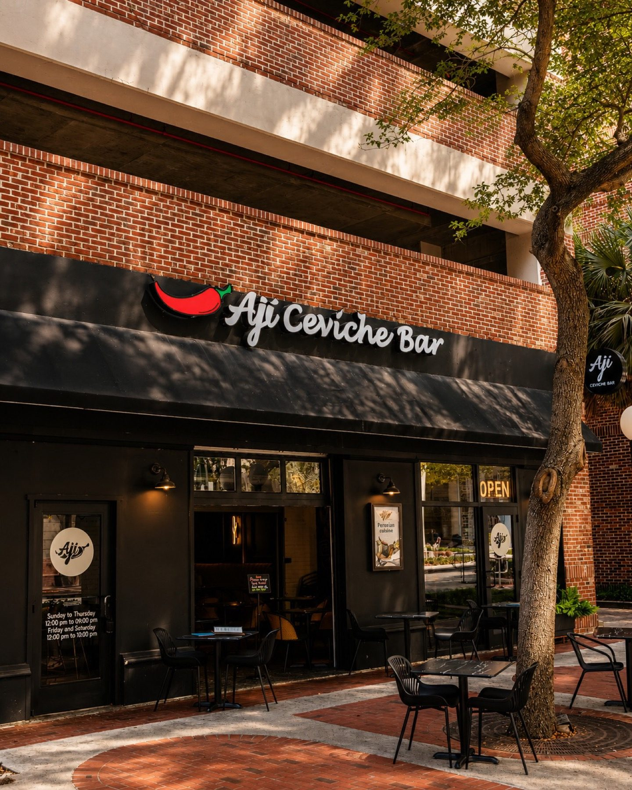
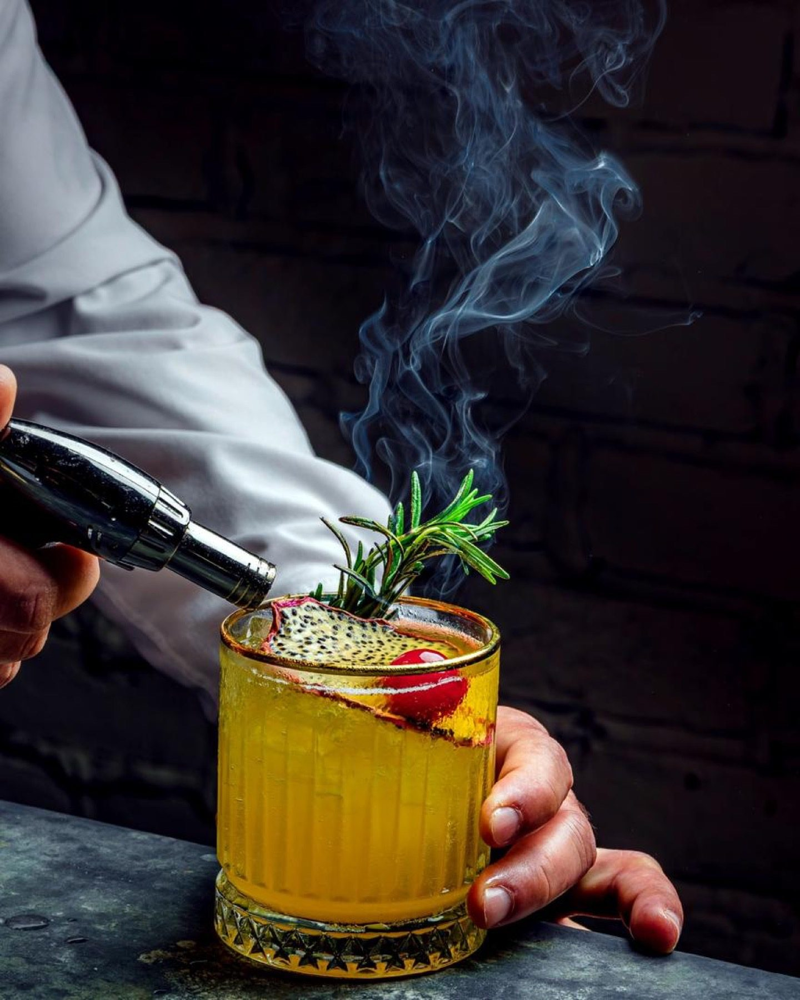
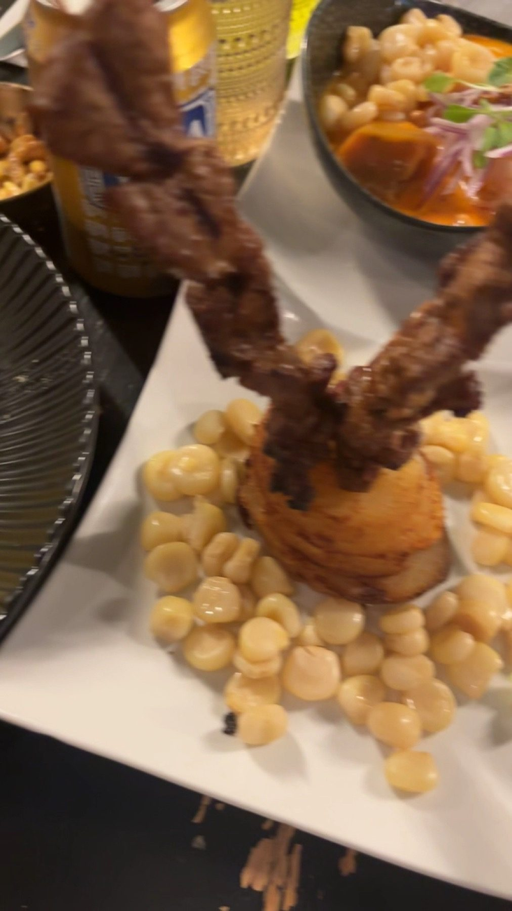
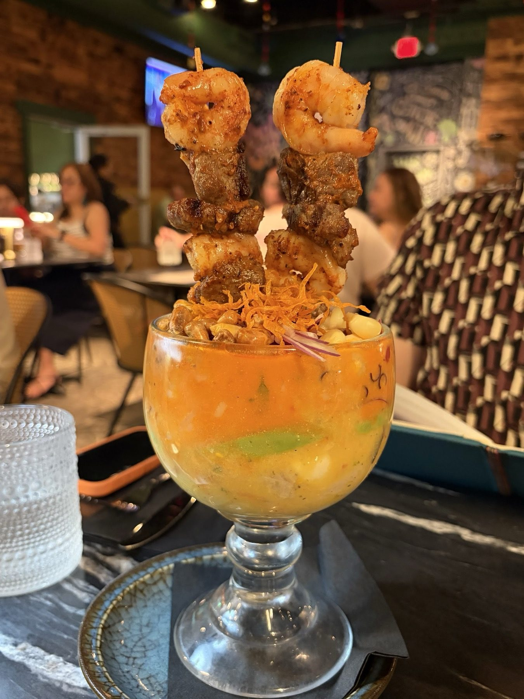
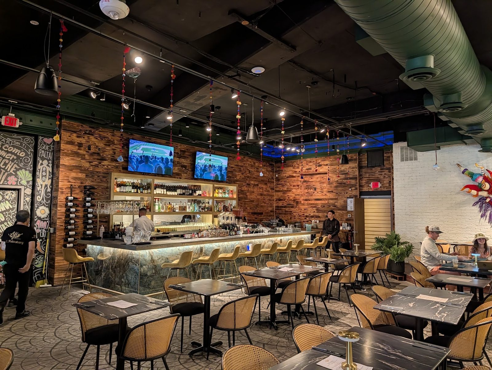

Ceviches
Carretillero, Ají Amarillo, Ají Explosión, Calle Capón and the Ají Sampler.

Peruvian restaurant · St. Petersburg, FL
Index of the menu
Ceviches, causas, arroces and sushi rolls. Pisco Sour to go with them.

What to order
Ceviche, plates and drinks.
Carretillero, Ají Amarillo, Ají Explosión, Calle Capón and the Ají Sampler.

Arroz con mariscos, parihuela, pargo frito and tacu tacu with lomo saltado.

Pisco Sour and cocktails from the bar.





4.8 / 5 · 574 Google reviews
1Delicious ceviche - the best we’ve ever had since Peru! Fresh, tender and the Peruvian fried rice was fantastic! Extensive drink menu
2I had an amazing experience at Ají Ceviche! The food was absolutely incredible fresh, flavorful, and beautifully prepared. Every dish we tried was packed with authentic taste, and you can really tell they care about quality. What made the visit even better was the outstanding service from Javier. He was attentive, friendly, and made sure everything was perfect from start to finish.
3My son and I stopped in for some ceviche before hitting the Dali museum. We had drinks that were fantastic and the presentation was superb! We ordered the Conchas a la Parmesana which were incredible! We also had the Shipibo, also incredible! We loved the food and our server, Adriana. We had such an amazing time and the food was so incredible that we went to the museum and went back for dinner!
About
Founder Freddy Zubieta started cooking at 15 and studied gastronomy in Peru and Mexico. Ají began as a food truck in Orlando in March 2015.
The first Ají Ceviche Bar opened on August 23, 2018. Today the ceviche bar serves St. Petersburg from 1st Avenue South.
Visit
200 1st Ave S Apt B, St. Petersburg, FL 33701
Open Sunday to Thursday 12 to 9, Friday and Saturday 12 to 10.